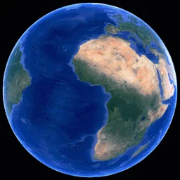
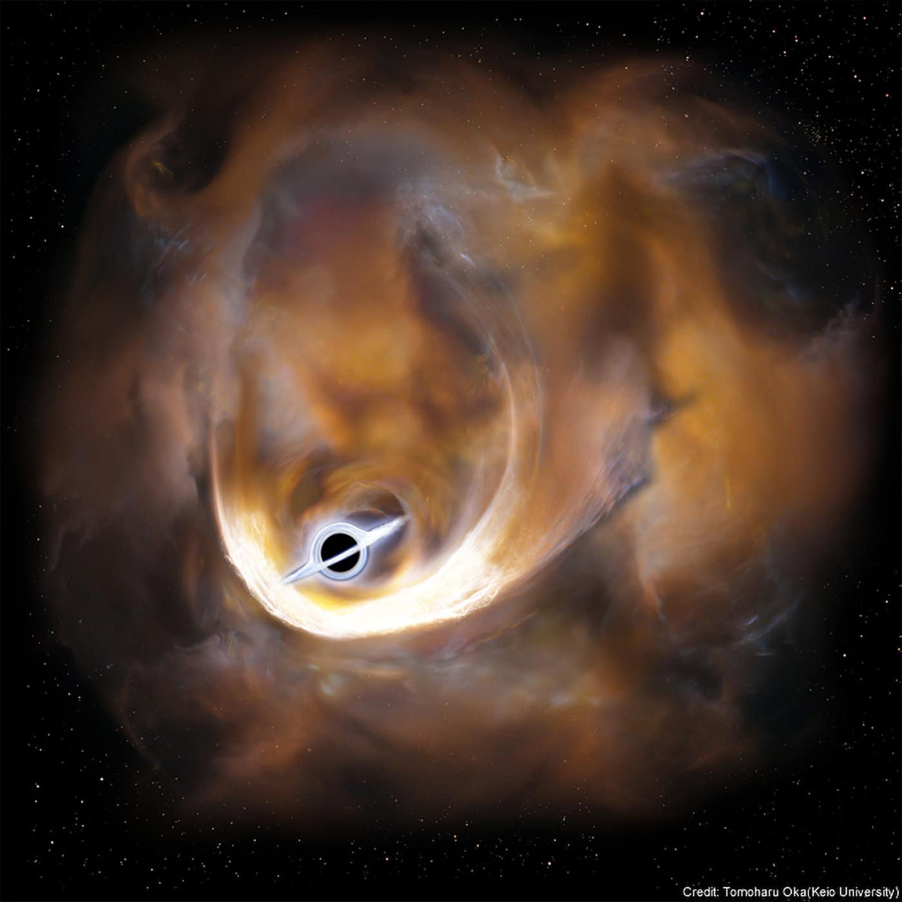

.gif)
tipos de planetas
Planeta terrestre
Un planeta terrestre es un planeta rocoso con una superficie sólida, compuesto principalmente de rocas o metales. Tiene una atmósfera delgada y su geografía incluye montañas, océanos y valles. Ejemplos incluyen la Tierra, Venus, y Marte.
Planeta gaseosos

Un planeta gaseoso está compuesto principalmente de gases como hidrógeno y helio, sin una superficie sólida. Tiene atmósferas gruesas y una estructura interna de gas y líquido. Ejemplos incluyen Júpiter, Saturno, Urano y Neptuno.
luna

Las lunas son cuerpos celestes que orbitan alrededor de planetas u otros cuerpos grandes. Se forman por captura gravitacional, impacto gigante o acumulación de material alrededor de un planeta.
estrella

Una estrella es un cuerpo celeste formado por gas, principalmente hidrógeno, que emite luz y energía debido a las reacciones nucleares que ocurren en su núcleo. Las estrellas varían en tamaño, color y luminosidad, y son los elementos fundamentales en la formación de sistemas planetarios.
sistema solar
Despues de ver planetas,lunas y estrellas, te preguntaras como estaran por el espacio. aqui la respuesta El Sistema Solar es un conjunto de cuerpos celestes que incluye al Sol, una estrella que se encuentra en el centro, y a los planetas, que orbitan alrededor de él debido a su gravedad. Los planetas se dividen en planetas terrestres, como la Tierra, Marte, Venus y Mercurio, que son rocosos, y planetas gigantes, como Júpiter, Saturno, Urano y Neptuno, que son gaseosos o helados. Además, el Sistema Solar está formado por lunas, que son cuerpos que orbitan los planetas, como la Luna que orbita la Tierra. esto ocurre debido al sol que genera un campo donde las demas cuerpos celestes giran alrededor de el, pero que hay despues el sistema solar?

GALAXIAS
Una galaxia es un enorme sistema de estrellas, gas, polvo y materia oscura, todos unidos por la gravedad. Las galaxias pueden contener miles de millones o incluso billones de estrellas, así como planetas, lunas y otros cuerpos celestes. La Vía Láctea es el nombre de la galaxia en la que se encuentra nuestro Sistema Solar. Las galaxias varían en tamaño, forma y características, y se clasifican principalmente en espirales, elípticas, irregulares y lenticulares.
Galaxia espiral

Tienen una forma de espiral con brazos que se extienden desde un centro denso. La Vía Láctea, nuestra galaxia, es un ejemplo. Estas galaxias suelen tener una gran cantidad de estrellas, gas y polvo, y son muy comunes en el universo.
Galaxia eliptica
Tienen una forma redonda o alargada y carecen de los brazos espirales. Están compuestas principalmente por estrellas viejas y tienen poco gas o polvo. Son más comunes en los cúmulos de galaxias.
Galaxia irregular
No tienen una forma definida, y su estructura es caótica. Estas galaxias suelen estar en proceso de formación o haber sufrido una colisión. Tienen una gran cantidad de gas y polvo, lo que favorece la formación de nuevas estrellas.
Galaxia lenticular
Son una mezcla entre galaxias espirales y elípticas. Tienen una forma similar a un disco, pero carecen de brazos espirales bien definidos. Contienen principalmente estrellas viejas y poco gas para formar nuevas estrellas.
AGUJEROS NEGROS
Un agujero negro es una región del espacio donde la gravedad es tan intensa que nada, ni siquiera la luz, puede escapar de él. Se forma cuando una estrella muy masiva colapsa al final de su vida, concentrando toda su masa en un espacio extremadamente pequeño. Los agujeros negros tienen una "frontera" llamada horizonte de eventos, que marca el punto de no retorno. Dentro de este horizonte, toda la materia y la luz quedan atrapadas. Aunque no se pueden ver directamente, su presencia se infiere por los efectos gravitacionales que tienen sobre objetos cercanos, como estrellas y gas, o por la radiación que emiten los discos de acreción que rodean algunos agujeros negros.
Agujero negro
estelar
Son los más comunes y se forman cuando una estrella masiva colapsa al final de su vida, tras agotar su combustible nuclear. Tienen entre 3 y 10 veces la masa del Sol. Se encuentran generalmente en las regiones centrales de galaxias.
Agujeros negros supermasivos
Son mucho más grandes, con masas que van desde millones hasta miles de millones de veces la masa del Sol. Se encuentran en el centro de casi todas las galaxias, incluida nuestra propia Vía Láctea (donde reside el agujero negro supermasivo llamado Sagitario A). Su origen aún es un misterio, pero se cree que se formaron al combinarse varios agujeros negros pequeños o por el colapso de grandes nubes de gas.
Agujero negro
intermedio

Tienen una masa que se encuentra entre los agujeros negros estelares y los supermasivos, típicamente entre 100 y 1000 veces la masa del Sol. Aunque se han teorizado, aún no se han encontrado muchos agujeros negros intermedios de forma definitiva. Se piensa que podrían haberse formado a partir de agujeros negros estelares que colisionaron.
Agujero negro
primordial
Son una hipótesis que sugiere que podrían haberse formado en los primeros momentos del universo debido a las condiciones extremas que existían en ese entonces. Pueden tener una masa mucho menor que los otros tipos de agujeros negros y podrían ser más comunes en el universo temprano. Sin embargo, aún no se ha encontrado evidencia directa de su existencia. osea no hagas punteo de informacion ponelo en un solo parrafo